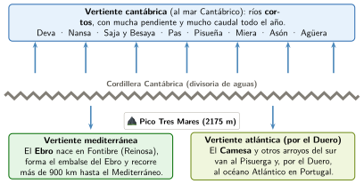

La red hidrográfica de Cantabria
Criterios: PN 1.1, PN 1.3
🤔 Pienso5 min
Qué hago aquí: Piensa un momento y contesta con lo que ya sabes. No pasa nada si no lo sabes: es para empezar.
Si echaras un barquito de papel al río más cercano a tu casa, ¿dónde crees que acabaría? ¿Qué lugares atravesaría?
📖 Leo y aprendo15 min
Qué hago aquí: Lee despacio, mira los dibujos y los ejemplos, y quédate con la idea clave del final.
La red hidrográfica de Cantabria es muy densa: llueve mucho y hay muchos ríos y arroyos. Para entenderla hay que conocer tres palabras:
Cantabria es especial porque tiene ríos de tres vertientes, separadas por la Cordillera Cantábrica:

Los ríos de la vertiente cantábrica son cortos (pocos superan los 60 km), porque la cordillera está muy cerca del mar; tienen mucha pendiente y bajan con fuerza; y llevan mucho caudal todo el año, porque llueve mucho. Al llegar al mar forman rías.
✏️ Hago25 min
Qué hago aquí: Haz las actividades en orden. Empieza siempre por las básicas.
Define cuenca, afluente y vertiente. Después explica la relación entre los tres términos usando el ejemplo del Saja y el Besaya.
Explica tres rasgos de los ríos de la vertiente cantábrica (longitud, pendiente, caudal) y relaciona cada uno con su causa (relieve o clima).
En el Pico Tres Mares caen tres gotas de lluvia en tres laderas distintas. Escribe el recorrido de cada gota: río por el que va, río principal y mar al que llega.
¿Por qué Cantabria tiene tres vertientes aunque es una comunidad pequeña? Relaciónalo con la posición de la cordillera.
Un río cántabro baja 1000 m de desnivel en 50 km; el Ebro baja unos 900 m en más de 900 km. Calcula los metros que desciende cada uno por kilómetro. ¿Qué consecuencias tiene la diferencia para la fuerza del agua, la erosión y el uso hidroeléctrico?
Si se vierte un contaminante en un afluente pequeño de la cabecera del Pas, ¿qué lugares quedarán afectados? Explica por qué hay que pensar en la cuenca entera y no solo en el punto del vertido.
Dibuja un esquema de una cuenca con el río principal, dos afluentes, la divisoria y la desembocadura en ría.
✏️ Puedes responder escribiendo, con un dibujo o un esquema, o contándolo en voz alta.
🚀 Amplío (si quieres saber más)
Qué hago aquí: ¿Has terminado? Lee la curiosidad o elige el reto. Es voluntario.
En las zonas de caliza los ríos pueden desaparecer bajo tierra y salir en una surgencia. Busca información sobre una surgencia de Cantabria (por ejemplo, la del Asón o la Fuentona de Ruente). Explica cómo funciona, por qué el agua sale a veces con más caudal tras una tormenta y por qué este «patrimonio azul» es frágil.
✅ Compruebo5 min
Qué hago aquí: Contesta sin mirar la ficha y marca cómo lo llevas.